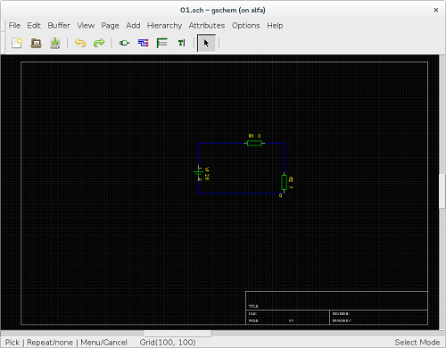
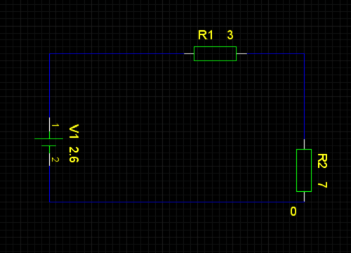
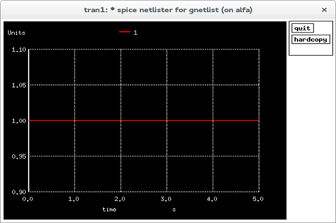
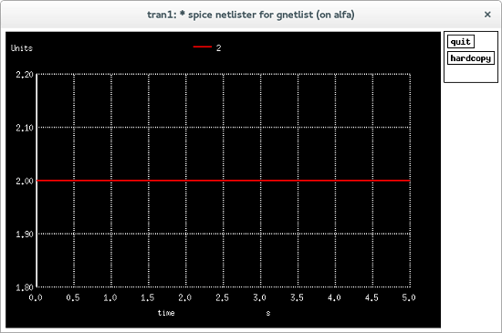
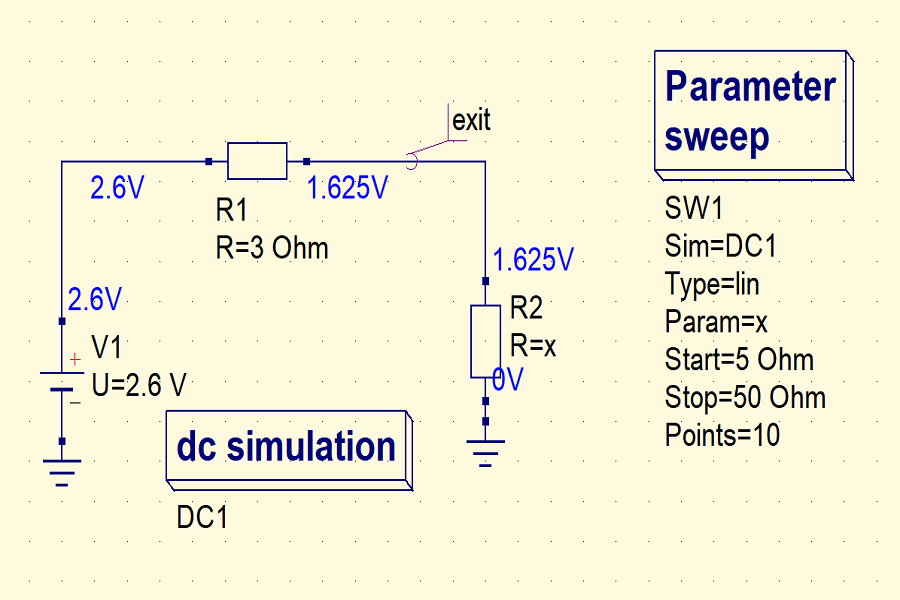
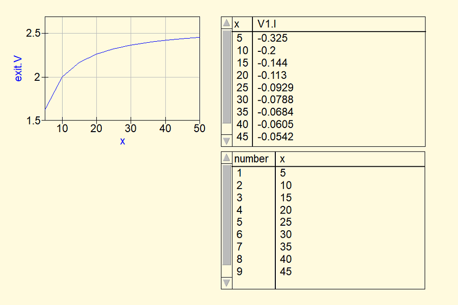

Lab Report 1
Nedim Hafizovic
March 2018
Contents
1
Chapter 1
Theoretical part
1.1
Circuit calculation
R1
3
R2
7
V1
2,6
UR1
0,78
UR2
1,82
2
1.2
Circuit diagram
7
2.6V
7
1.3
Circuit plot
1
0.5
0
−0.5
−6
−4
−2
0
2
4
6
3
Chapter 2
Practical part
2.1
Work with GEDA programs
4


2.1.1
Work with gschem
Figure 2.1: Circuit within the gEDA schematics environment. [?]
Figure 2.2: Circuit with elements R1, R2 and V1.
5
2.1.2
Work with gnetlist
∗ Spice n e t l i s t e r f o r g n e t l i s t
R2 2 0 7
R1 1 2 3
V1 1 0 2 . 6
.END
6


2.1.3
Work with ngspice
Figure 2.3: Simulation of voltage on resistor R1.
Figure 2.4: Simulation of voltage on resistor R2.
7


2.2
Work with QUCS programs
Figure 2.5: Circuit within the QUCS schematics environment. [?]
Figure 2.6: Plot with Cartesian coordinates, tabular view of currents flowing
from points V1.1 and x.
8
Bibliography
[1] Ales Hvezda. gEDA
http://www.geda-project.org/
[2] Michael Margraf, Stefan Jahn. Quite Universal Circuit Simulator
http://qucs.sourceforge.net/
9